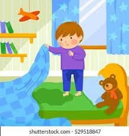

When i was still a child, i often pee at my bed, and my parents both scold me for that, making me embarrassed everytime.
So i made a plan, everytime before i go to bed, ill pee first at the bathroom then everytime i wake up, i will smell my bed
sheet if there would be any smell from my bed sheets. While smelling my bedseet, i was seen by my parents and they we're both
alaughing at me taht makes me more embarrassed